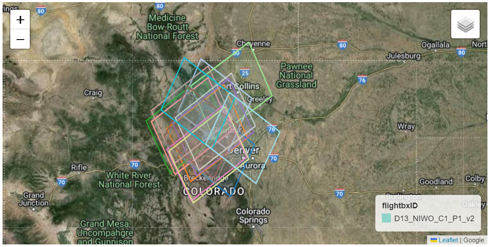
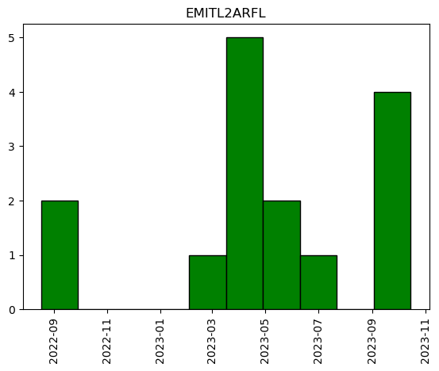
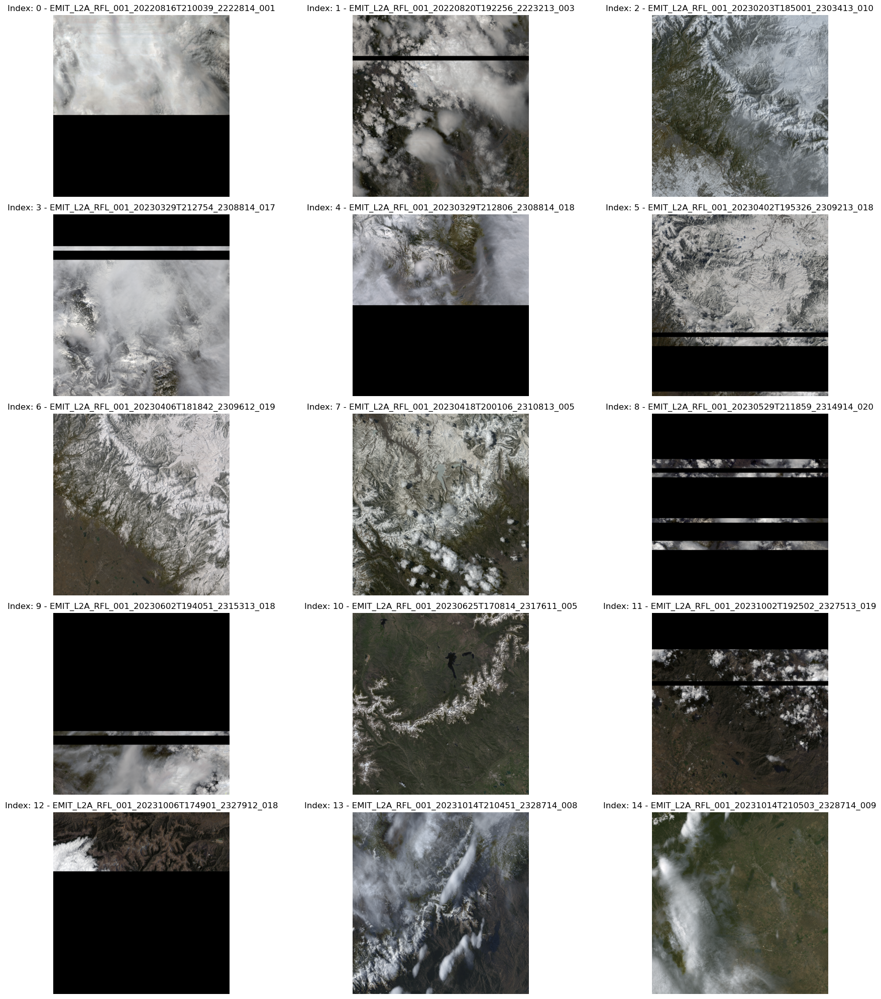
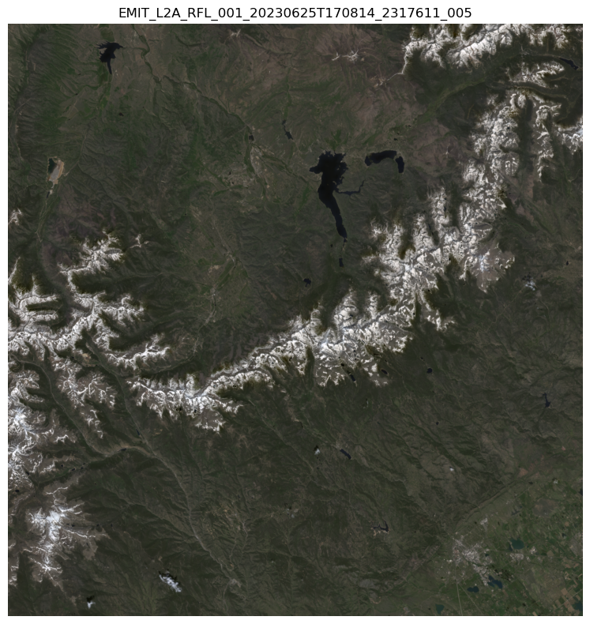

# Import required libraries
import os, sys
import folium
import earthaccess
import warnings
import folium.plugins
import pandas as pd
import geopandas as gpd
import math
import requests
from zipfile import ZipFile
from branca.element import Figure
from IPython.display import display
from shapely import geometry
from skimage import io
from datetime import timedelta
from shapely.geometry.polygon import orient
from matplotlib import pyplot as plt1 Finding Co-located EMIT and NEON AOP Data
Summary
The Earth surface Mineral dust source InvesTigation (EMIT) instrument is located on the International Space Station (ISS) and has collected data over a large area of the Continental US. The National Ecological Observatory Network (NEON) Airborne Observation Platform (AOP) collects aerial remote sensing data, including hyperspectral reflectance data over sites across the United States and Puerto Rico. In this notebook we will show how to utilize the earthaccess Python library to find spatially overlapping EMIT and NEON reflectance data at NEON’s Niwot Ridge site (NIWO) in the Rocky Mountains of Colorado.

Background
The EMIT instrument is an imaging spectrometer that measures light in visible (V) to short-wave (SWIR) infrared wavelengths; this is also referred to as a VSWIR sensor. These measurements display unique spectral signatures that correspond to the composition on the Earth’s surface. The EMIT mission focuses specifically on mapping the composition of minerals to better understand the effects of mineral dust throughout the Earth system and human populations now and in the future. In addition, the EMIT instrument can be used in other applications, such as mapping of greenhouse gases, snow properties, and water resources.
More details about EMIT and its associated products can be found on the EMIT website and EMIT product pages hosted by the LP DAAC.
The NEON Imaging Spectrometer (NIS) is an airborne imaging spectrometer built by JPL (AVIRIS-NG) and operated by the National Ecological Observatory Network’s (NEON) Airborne Observation Platform (AOP). NEON’s hyperspectral sensors collect measurements of sunlight reflected from the Earth’s surface in 426 narrow (~5 nm) spectral channels spanning wavelengths between ~ 380 - 2500 nm. NEON’s remote sensing data is intended to map and answer questions about a landscape, with ecological applications including identifying and classifying plant species and communities, mapping vegetation health, detecting disease or invasive species, and mapping droughts, wildfires, or other natural disturbances and their impacts.
NEON surveys sites spanning the continental US, during peak phenological greenness, capturing each site 3 out of every 5 years, for most terrestrial sites. AOP’s Flight Schedules and Coverage provide’s more information about the current and past schedules.
More detailed information about NEON’s airborne sampling design can be found in the paper: Spanning scales: The airborne spatial and temporal sampling design of the National Ecological Observatory Network.
Requirements
- NASA Earthdata Account
- No Python setup requirements if connected to the workshop cloud instance!
- Local Only Set up Python Environment - See setup_instructions.md in the /setup/ folder to set up a local compatible Python environment
- NEON API Token (optional, but recommended), see NEON API Tokens Tutorial
Download the NEON Flight Boundary Shapefile: AOP_flightBoxes.zip
Learning Objectives
- Use functions provided in an external Python module to find and download available NEON airborne reflectance data. - Use earthaccess to find EMIT data that overlaps with a NEON site. - How to export a list of files and download them programmatically.
Tutorial Outline
- Setup
- Explore NEON sites and finding available NEON reflectance data
- Search for EMIT reflectance data
- Organize and filter results
- Visualize intersecting NEON-EMIT coverage
- Create a list of EMIT asset URLs
- Download EMIT data
1. Setup
Import the required Python libraries.
1.2 NEON Data API and Python Functions
Note: In Sept-Oct 2024, these next two chunks of code can be replaced with the Python neonUtilities package, which has built in functions for downloading NEON AOP data.
# function to download data stored on the internet in a public url to a local file
def download_url(url,download_dir):
if not os.path.isdir(download_dir):
os.makedirs(download_dir)
filename = url.split('/')[-1]
r = requests.get(url, allow_redirects=True)
file_object = open(os.path.join(download_dir,filename),'wb')
file_object.write(r.content)neon_code_folder = './neon_python_modules'
aop_download_module_url = "https://raw.githubusercontent.com/NEONScience/NEON-Data-Skills/main/tutorials/Python/AOP/aop_python_modules/neon_aop_download_functions.py"
download_url(aop_download_module_url,neon_code_folder)
#os.listdir(neon_code_folder) #optionally show the contents of this directory to confirm the files downloaded
# add the code folder to the path and import the neon aop download functions module
sys.path.insert(0,neon_code_folder)
import neon_aop_download_functions as aop_dl;1.3 NASA Earthdata Login Credentials
To download or stream NASA data you will need an Earthdata account, you can create one here. We will use the login function from the earthaccess library for authentication before downloading at the end of the notebook. This function can also be used to create a local .netrc file if it doesn’t exist or add your login info to an existing .netrc file. If no Earthdata Login credentials are found in the .netrc you’ll be prompted for them. This step is not necessary to conduct searches but is needed to download or stream data.
2. Search for NEON and EMIT Data
NEON data products are hosted on the NEON Data Portal, and can be accessed via an API. We will import a Python module including some functions that interact with the NEON data API to easily see what data are available (in what years), and download data.
The EMIT products are hosted by the Land Processes Distributed Active Archive Center (LP DAAC). In this example we will use the cloud-hosted EMIT_L2A_RFL and ECOSTRESS_L2T_LSTE products available from the LP DAAC to find data. Any results we find for these products, should be available for other products within the EMIT and ECOSTRESS collections.
To find data we will use the earthaccess Python library. earthaccess searches NASA’s Common Metadata Repository (CMR), a metadata system that catalogs Earth Science data and associated metadata records. The results can then be used to download granules or generate lists of granule search result URLs.
Using earthaccess we can search based on the attributes of a granule, which can be thought of as a spatiotemporal scene from an instrument containing multiple assets (ex: Reflectance, Reflectance Uncertainty, Masks for the EMIT L2A Reflectance Collection). We can search using attributes such as collection, acquisition time, and spatial footprint. This process can also be used with other EMIT or ECOSTRESS products, other collections, or different data providers, as well as across multiple catalogs with some modification.
2.1 Define Spatial Regions of Interest (ROIs)
For this example, our spatial region of interest (ROI) will be the NEON site Niwot Ridge (NIWO) in the Rocky Mountains, Colorado.
In this example, we will create a rectangular ROI surrounding the NIWO flight box. We will search for co-located EMIT data using a polygon rather than a standard bounding box in earthaccess. To search for intersections with a polygon using earthaccess, we need to format our ROI as a counterclockwise list of coordinate pairs.
Download, Unzip, and Open the shape file (.shp) containing the AOP flight box boundaries, which can be downloaded from NEON Spatial Data and Maps. Read this into a geodataframe, explore the contents, and check the coordinate reference system (CRS) of the data.
# Download and Unzip the NEON Flight Boundary Shapefile
neon_boundary_url = "https://www.neonscience.org/sites/default/files/AOP_flightBoxes_0.zip"
# Use download_url function to save the file to a directory
os.makedirs('./data', exist_ok=True)
download_url(neon_boundary_url,'./data')
# Unzip the file
with ZipFile(f"./data/{neon_boundary_url.split('/')[-1]}", 'r') as zip_ref:
zip_ref.extractall('./data')aop_flightboxes = gpd.read_file("./data/AOP_flightBoxes/AOP_flightboxesAllSites.shp")
aop_flightboxes.head()| domain | domainName | siteName | siteID | siteType | sampleType | priority | version | flightbxID | geometry | |
|---|---|---|---|---|---|---|---|---|---|---|
| 0 | D01 | Northeast | Bartlett Experimental Forest NEON | BART | Gradient | Terrestrial | 1 | 1 | D01_BART_R1_P1_v1 | POLYGON ((-71.33426 43.99197, -71.33423 44.081... |
| 1 | D01 | Northeast | Harvard Forest & Quabbin Watershed NEON | HARV | Core | Terrestrial | 1 | 1 | D01_HARV_C1_P1_v1 | POLYGON ((-72.14819 42.57510, -72.14776 42.383... |
| 2 | D01 | Northeast | Harvard Forest & Quabbin Watershed NEON | HARV | Core | Terrestrial | 3 | 1 | D01_HARV_C1_P3_v1 | POLYGON ((-72.10812 42.43653, -72.14788 42.436... |
| 3 | D01 | Northeast | Lower Hop Brook NEON | HOPB | Core | Aquatic | 2 | 1 | D01_HOPB_C1_P2_v1 | POLYGON ((-72.36635 42.46399, -72.36635 42.514... |
| 4 | D19 | Taiga | Healy NEON | HEAL | Gradient | Terrestrial | 1 | 1 | D19_HEAL_R3_P1_v1 | POLYGON ((-149.31505 63.82981, -149.31505 63.9... |
aop_flightboxes.crs<Geographic 2D CRS: EPSG:4326>
Name: WGS 84
Axis Info [ellipsoidal]:
- Lat[north]: Geodetic latitude (degree)
- Lon[east]: Geodetic longitude (degree)
Area of Use:
- name: World.
- bounds: (-180.0, -90.0, 180.0, 90.0)
Datum: World Geodetic System 1984 ensemble
- Ellipsoid: WGS 84
- Prime Meridian: GreenwichThe CRS is EPSG:4326 (WGS84), which is also the CRS we want the data in to submit for our search of EMIT data.
Next, let’s examine the AOP flightboxes polygons further. For this exercise, we’ll first look at Niwot Ridge site in Colorado.
aop_flightboxes[aop_flightboxes.siteID == 'NIWO']| domain | domainName | siteName | siteID | siteType | sampleType | priority | version | flightbxID | geometry | |
|---|---|---|---|---|---|---|---|---|---|---|
| 49 | D13 | Southern Rockies & Colorado Plateau | Niwot Ridge NEON | NIWO | Core | Terrestrial | 1 | 2 | D13_NIWO_C1_P1_v2 | POLYGON ((-105.48908 40.07292, -105.48912 39.9... |
We can see the NIWO geodataframe consists of a single polygon, that we want to include in our study site (sometimes NEON sites may have more than one polygon, as there are sometimes multiple areas, with different priorities for collection).
# write this to a new variable called "niwo_polygon"
niwo_polygon = aop_flightboxes[aop_flightboxes.siteID == 'NIWO']
# subset to only include columns of interest
niwo_polygon = niwo_polygon[['domain','siteName','siteID','sampleType','flightbxID','priority','geometry']]# Create external boundary of the shape
niwo_roi_poly = niwo_polygon.unary_union.envelope
# Re-order vertices to counterclockwise
niwo_roi_poly = orient(niwo_roi_poly, sign=1.0)Make a GeoDataFrame consisting of the bounding box geometry.
niwo_df = pd.DataFrame({"Name":["NIWO ROI Bounding Box"]})
niwo_bbox = gpd.GeoDataFrame({"Name":["NIWO ROI Bounding Box"], "geometry":[niwo_roi_poly]},crs="EPSG:4326")
niwo_bbox| Name | geometry | |
|---|---|---|
| 0 | NIWO ROI Bounding Box | POLYGON ((-105.64789 39.98286, -105.48908 39.9... |
We can write this bounding box to a geojson file for use in future notebooks. This is commented out for now, but you can uncomment and run the cell below, if desired.
#niwo_bbox.to_file('../data/niwo_bbox.geojson', driver='GeoJSON')Next we can visualize our region of interest and the exterior boundary polygon containing ROIs. First add a function to help reformat bounding box coordinates to work with leaflet notation.
# Function to convert a bounding box for use in leaflet notation
def convert_bounds(bbox, invert_y=False):
"""
Helper method for changing bounding box representation to leaflet notation
``(lon1, lat1, lon2, lat2) -> ((lat1, lon1), (lat2, lon2))``
"""
x1, y1, x2, y2 = bbox
if invert_y:
y1, y2 = y2, y1
return ((y1, x1), (y2, x2))fig = Figure(width="750px", height="375px")
map1 = folium.Map(tiles='https://mt1.google.com/vt/lyrs=y&x={x}&y={y}&z={z}', attr='Google')
fig.add_child(map1)
# Add NIWO Bounding Box
folium.GeoJson(niwo_bbox, name='bounding_box').add_to(map1)
# Add roi geodataframe
niwo_polygon.explore("flightbxID",
popup=True,
categorical=True,
cmap='Set3',
style_kwds=dict(opacity=0.7, fillOpacity=0.4),
name="Niwot Ridge ROI",
m=map1)
map1.add_child(folium.LayerControl())
map1.fit_bounds(bounds=convert_bounds(niwo_polygon.unary_union.bounds))
display(fig)Above we can see the Niwot Ridge flightbox, and the exterior boundary polygon containing the full area.
Lastly, we need to convert our polygon to a list of coordinate pairs, to create our Region of Interest (ROI).
# Set ROI as list of exterior polygon vertices as coordinate pairs
niwo_roi = list(niwo_roi_poly.exterior.coords)
niwo_roi[(-105.64788824641289, 39.98286247719818),
(-105.48907581013356, 39.98286247719818),
(-105.48907581013356, 40.07295974374222),
(-105.64788824641289, 40.07295974374222),
(-105.64788824641289, 39.98286247719818)]Finally we can look at the available NEON hyperspectral reflectance data over NIWO. NEON hyperspectral reflectance data are currently available under two different revisions, as AOP is in the process of implementing a BRDF (Bidirectional Reflectance Distribution Function), but this has not been applied to the full archive of data yet. These data are available under two revisions of the data product ID DP3.30006 - DP3.30006.001 are the directional surface reflectance, and DP3.30006.002 are the bidirectional (BRDF- and topographic- corrected) surface reflectance. Let’s see what’s available for each of these data products.
refl_rev1_dpid = 'DP3.30006.001'
refl_rev2_dpid = 'DP3.30006.002'
site = 'NIWO'print('Directional Reflectance Data Available at NEON Site NIWO')
aop_dl.list_available_urls(refl_rev1_dpid,site)Directional Reflectance Data Available at NEON Site NIWO['https://data.neonscience.org/api/v0/data/DP3.30006.001/NIWO/2017-09',
'https://data.neonscience.org/api/v0/data/DP3.30006.001/NIWO/2018-08',
'https://data.neonscience.org/api/v0/data/DP3.30006.001/NIWO/2019-08',
'https://data.neonscience.org/api/v0/data/DP3.30006.001/NIWO/2020-08']print('Bidirectional Reflectance Data Available at NEON Site NIWO')
aop_dl.list_available_urls(refl_rev2_dpid,site)Bidirectional Reflectance Data Available at NEON Site NIWO
WARNING: no urls found for product DP3.30006.002 at site NIWOThe bidirectional data for the later visits of NIWO are not yet available. We’ll start by looking at the directional surface reflectance for NIWO in 2020.
year = '2020'We can download the reflectance data using the function aop_dl.download_aop_files. You can change the download path if desired.
Before we download the data, let’s look at the spatial extent. AOP data are provided in UTM projection. We can do this by downloading shapefiles of the tile boundaries. These are available as metadata provided along with the reflectance data products. The full boundary of the site is a file called “merged_tiles.shp/.shx”. Let’s only download this shapefile so we can see the file extent, and determine the UTM coordinates of the tiles we wish to download.
# aop_dl.download_aop_files?# download the full-boundary shape files from the lidar data. These are delivered as metadata as part of one of the Lidar data products, so note that the data product id (DPID) is different
aop_dl.download_aop_files('DP1.30003.001',site,year,'./data/neon_refl',match_string='merged_tiles.shp',check_size=False)
aop_dl.download_aop_files('DP1.30003.001',site,year,'./data/neon_refl',match_string='merged_tiles.shx',check_size=False)Download size: 0.61 kB
downloading 2020_NIWO_4_merged_tiles.shp to ./data/neon_refl
Download size: 0.0 kB
downloading 2020_NIWO_4_merged_tiles.shx to ./data/neon_refl# optionally display the contents in the data/neon_refl folder to make sure the files have downloaded
os.listdir('./data/neon_refl')['2020_NIWO_4_merged_tiles.shp',
'2020_NIWO_4_merged_tiles.shx',
'NEON_D13_NIWO_DP3_454000_4431000_reflectance.h5']niwo_2020_gdf = gpd.read_file(os.path.join('./data/neon_refl','2020_NIWO_4_merged_tiles.shp'))
niwo_2020_gdf.plot(alpha=0.5);
ax = plt.gca(); ax.ticklabel_format(style='plain')
ax.set_title('AOP Coverage of ' + site + ' in ' + year);
plt.xticks(rotation=90); #optionally rotate the xtick labels
The reflectance data can be large in size, so for now, we’ll just download a single tile, which encompasses the CU Boulder Mountain Research Station at Niwot Ridge. We can do that with the download_aop_files function as follows. This time leave out the check_size input parameter, and that will default to True. This will prompt you to download after displaying the download size. This reflectance file is ~615 MB, so make sure you have enough space on your local disk before downloading.
# download a reflectance hdf5 tile
aop_dl.download_aop_files('DP3.30006.001',site,year,'./data/neon_refl',match_string='454000_4431000_reflectance.h5')Download size: 615.17 MB
downloading NEON_D13_NIWO_DP3_454000_4431000_reflectance.h5 to ./data/neon_refl2.2 Define EMIT Collections of Interest
We need to specify which products we want to search for. The best way to do this is using their concept-id. As mentioned above, we will conduct our search using the EMIT Level 2A Reflectance (EMITL2ARFL). We can do some quick collection queries using earthaccess to retrieve the concept-id for each dataset.
# EMIT Collection Query
emit_collection_query = earthaccess.collection_query().keyword('EMIT L2A Reflectance')
emit_collection_query.fields(['ShortName','EntryTitle','Version']).get()[{
"meta": {
"concept-id": "C2408750690-LPCLOUD",
"granule-count": 97750,
"provider-id": "LPCLOUD"
},
"umm": {
"ShortName": "EMITL2ARFL",
"EntryTitle": "EMIT L2A Estimated Surface Reflectance and Uncertainty and Masks 60 m V001",
"Version": "001"
}
}]If your search returns multiple products, be sure to select the right concept-id For this example it will be the first one. We want to use the LPCLOUD ECOSTRESS Tiled Land Surface Temperature and Emissivity (concept-id: “C2076090826-LPCLOUD”). Create a list of these concept-ids for our data search.
# Data Collections for our search
emit_concept_id = ['C2408750690-LPCLOUD']2.3 Define Date Range
For our date range, we’ll look at data collected between January 2022 and October 2023. The date_range can be specified as a pair of dates, start and end (up to, not including).
# Define Date Range
date_range = ('2022-01-01','2023-11-01')2.4 Searching
Submit a query using earthaccess, usin the niwo_roi as the region of interest.
emit_query_results = earthaccess.search_data(
concept_id=emit_concept_id,
polygon=niwo_roi,
temporal=date_range,
count=500)3. Organizing and Filtering Results
As we can see from above, the results object contains a list of objects with metadata and links. We can convert this to a more readable format, a dataframe. In addition, we can make it a geodataframe by taking the spatial metadata and creating a shapely polygon representing the spatial coverage, and further customize which information we want to use from other metadata fields.
First, we define some functions to help us create a shapely object for our geodataframe, and retrieve the specific browse image URLs that we want. By default, the browse image selected by earthaccess is the first one in the list, but the ECO_L2_LSTE has several browse images, and we want to make sure we retrieve the png file, which is a preview of the LSTE.
# Function to create shapely polygon of spatial coverage
def get_shapely_object(result:earthaccess.results.DataGranule):
# Get Geometry Keys
geo = result['umm']['SpatialExtent']['HorizontalSpatialDomain']['Geometry']
keys = geo.keys()
if 'BoundingRectangles' in keys:
bounding_rectangle = geo['BoundingRectangles'][0]
# Create bbox tuple
bbox_coords = (bounding_rectangle['WestBoundingCoordinate'],bounding_rectangle['SouthBoundingCoordinate'],
bounding_rectangle['EastBoundingCoordinate'],bounding_rectangle['NorthBoundingCoordinate'])
# Create shapely geometry from bbox
shape = geometry.box(*bbox_coords, ccw=True)
elif 'GPolygons' in keys:
points = geo['GPolygons'][0]['Boundary']['Points']
# Create shapely geometry from polygons
shape = geometry.Polygon([[p['Longitude'],p['Latitude']] for p in points])
else:
raise ValueError('Provided result does not contain bounding boxes/polygons or is incompatible.')
return(shape)
# Retrieve png browse image if it exists or first jpg in list of urls
def get_png(result:earthaccess.results.DataGranule):
https_links = [link for link in result.dataviz_links() if 'https' in link]
if len(https_links) == 1:
browse = https_links[0]
elif len(https_links) == 0:
browse = 'no browse image'
warnings.warn(f"There is no browse imagery for {result['umm']['GranuleUR']}.")
else:
browse = [png for png in https_links if '.png' in png][0]
return(browse)Now that we have our functions we can create a dataframe, then calculate and add our shapely geometries to make a geodataframe. After that, add a column for our browse image urls and print the number of granules in our results, so we can monitor the quantity we are working with a we winnow down to the data we want.
# Create Dataframe of Results Metadata
emit_results_df = pd.json_normalize(emit_query_results)
# Create shapely polygons for result
geometries = [get_shapely_object(emit_query_results[index]) for index in emit_results_df.index.to_list()]
# Convert to GeoDataframe
emit_gdf = gpd.GeoDataFrame(emit_results_df, geometry=geometries, crs="EPSG:4326")
# Remove emit_results_df, no longer needed
del emit_results_df
# Add browse imagery links
emit_gdf['browse'] = [get_png(granule) for granule in emit_query_results]
emit_gdf['shortname'] = [result['umm']['CollectionReference']['ShortName'] for result in emit_query_results]
# Preview GeoDataframe
print(f'{emit_gdf.shape[0]} granules total')15 granules totalPreview our geodataframe to get an idea what it looks like.
emit_gdf.head()| size | meta.concept-type | meta.concept-id | meta.revision-id | meta.native-id | meta.collection-concept-id | meta.provider-id | meta.format | meta.revision-date | umm.TemporalExtent.RangeDateTime.BeginningDateTime | ... | umm.DataGranule.DayNightFlag | umm.DataGranule.ArchiveAndDistributionInformation | umm.DataGranule.ProductionDateTime | umm.Platforms | umm.MetadataSpecification.URL | umm.MetadataSpecification.Name | umm.MetadataSpecification.Version | geometry | browse | shortname | |
|---|---|---|---|---|---|---|---|---|---|---|---|---|---|---|---|---|---|---|---|---|---|
| 0 | 3578.655884 | granule | G2597398990-LPCLOUD | 1 | EMIT_L2A_RFL_001_20220816T210039_2222814_001 | C2408750690-LPCLOUD | LPCLOUD | application/vnd.nasa.cmr.umm+json | 2023-01-27T10:36:41.872Z | 2022-08-16T21:00:39Z | ... | Day | [{'Name': 'EMIT_L2A_RFL_001_20220816T210039_22... | 2023-01-27T10:26:44Z | [{'ShortName': 'ISS', 'Instruments': [{'ShortN... | https://cdn.earthdata.nasa.gov/umm/granule/v1.6.6 | UMM-G | 1.6.6 | POLYGON ((-105.64632 40.42052, -106.05467 39.7... | https://data.lpdaac.earthdatacloud.nasa.gov/lp... | EMITL2ARFL |
| 1 | 3581.975898 | granule | G2597690501-LPCLOUD | 1 | EMIT_L2A_RFL_001_20220820T192256_2223213_003 | C2408750690-LPCLOUD | LPCLOUD | application/vnd.nasa.cmr.umm+json | 2023-01-28T00:54:23.821Z | 2022-08-20T19:22:56Z | ... | Day | [{'Name': 'EMIT_L2A_RFL_001_20220820T192256_22... | 2023-01-28T00:42:40Z | [{'ShortName': 'ISS', 'Instruments': [{'ShortN... | https://cdn.earthdata.nasa.gov/umm/granule/v1.6.6 | UMM-G | 1.6.6 | POLYGON ((-105.71240 41.02232, -106.10945 40.3... | https://data.lpdaac.earthdatacloud.nasa.gov/lp... | EMITL2ARFL |
| 2 | 3580.405610 | granule | G2624104672-LPCLOUD | 1 | EMIT_L2A_RFL_001_20230203T185001_2303413_010 | C2408750690-LPCLOUD | LPCLOUD | application/vnd.nasa.cmr.umm+json | 2023-03-02T03:11:43.968Z | 2023-02-03T18:50:01Z | ... | Day | [{'Name': 'EMIT_L2A_RFL_001_20230203T185001_23... | 2023-03-02T03:01:34Z | [{'ShortName': 'ISS', 'Instruments': [{'ShortN... | https://cdn.earthdata.nasa.gov/umm/granule/v1.6.6 | UMM-G | 1.6.6 | POLYGON ((-105.33098 40.69196, -106.29222 40.1... | https://data.lpdaac.earthdatacloud.nasa.gov/lp... | EMITL2ARFL |
| 3 | 3578.689785 | granule | G2646169485-LPCLOUD | 1 | EMIT_L2A_RFL_001_20230329T212754_2308814_017 | C2408750690-LPCLOUD | LPCLOUD | application/vnd.nasa.cmr.umm+json | 2023-04-02T02:42:57.159Z | 2023-03-29T21:27:54Z | ... | Day | [{'Name': 'EMIT_L2A_RFL_001_20230329T212754_23... | 2023-04-02T02:32:39Z | [{'ShortName': 'ISS', 'Instruments': [{'ShortN... | https://cdn.earthdata.nasa.gov/umm/granule/v1.6.6 | UMM-G | 1.6.6 | POLYGON ((-105.67938 40.79424, -106.64290 40.2... | https://data.lpdaac.earthdatacloud.nasa.gov/lp... | EMITL2ARFL |
| 4 | 3577.591364 | granule | G2646169234-LPCLOUD | 1 | EMIT_L2A_RFL_001_20230329T212806_2308814_018 | C2408750690-LPCLOUD | LPCLOUD | application/vnd.nasa.cmr.umm+json | 2023-04-02T02:42:41.276Z | 2023-03-29T21:28:06Z | ... | Day | [{'Name': 'EMIT_L2A_RFL_001_20230329T212806_23... | 2023-04-02T02:32:39Z | [{'ShortName': 'ISS', 'Instruments': [{'ShortN... | https://cdn.earthdata.nasa.gov/umm/granule/v1.6.6 | UMM-G | 1.6.6 | POLYGON ((-104.90044 41.24032, -105.88304 40.6... | https://data.lpdaac.earthdatacloud.nasa.gov/lp... | EMITL2ARFL |
5 rows × 31 columns
There are a lot of columns with data that is not relevant for this exercise, so we can drop those. To do that, list the names of columns.
# List Column Names
emit_gdf.columnsIndex(['size', 'meta.concept-type', 'meta.concept-id', 'meta.revision-id',
'meta.native-id', 'meta.collection-concept-id', 'meta.provider-id',
'meta.format', 'meta.revision-date',
'umm.TemporalExtent.RangeDateTime.BeginningDateTime',
'umm.TemporalExtent.RangeDateTime.EndingDateTime', 'umm.GranuleUR',
'umm.AdditionalAttributes',
'umm.SpatialExtent.HorizontalSpatialDomain.Geometry.GPolygons',
'umm.ProviderDates', 'umm.CollectionReference.ShortName',
'umm.CollectionReference.Version', 'umm.PGEVersionClass.PGEName',
'umm.PGEVersionClass.PGEVersion', 'umm.RelatedUrls', 'umm.CloudCover',
'umm.DataGranule.DayNightFlag',
'umm.DataGranule.ArchiveAndDistributionInformation',
'umm.DataGranule.ProductionDateTime', 'umm.Platforms',
'umm.MetadataSpecification.URL', 'umm.MetadataSpecification.Name',
'umm.MetadataSpecification.Version', 'geometry', 'browse', 'shortname'],
dtype='object')Now create a list of columns to keep and use it to filter the dataframe.
# Create a list of columns to keep
keep_cols = ['meta.concept-id','meta.native-id', 'umm.TemporalExtent.RangeDateTime.BeginningDateTime','umm.TemporalExtent.RangeDateTime.EndingDateTime','umm.CloudCover','umm.DataGranule.DayNightFlag','geometry','browse', 'shortname']
# Remove unneeded columns
emit_gdf = emit_gdf[emit_gdf.columns.intersection(keep_cols)]
emit_gdf.head()| meta.concept-id | meta.native-id | umm.TemporalExtent.RangeDateTime.BeginningDateTime | umm.TemporalExtent.RangeDateTime.EndingDateTime | umm.CloudCover | umm.DataGranule.DayNightFlag | geometry | browse | shortname | |
|---|---|---|---|---|---|---|---|---|---|
| 0 | G2597398990-LPCLOUD | EMIT_L2A_RFL_001_20220816T210039_2222814_001 | 2022-08-16T21:00:39Z | 2022-08-16T21:00:51Z | 98 | Day | POLYGON ((-105.64632 40.42052, -106.05467 39.7... | https://data.lpdaac.earthdatacloud.nasa.gov/lp... | EMITL2ARFL |
| 1 | G2597690501-LPCLOUD | EMIT_L2A_RFL_001_20220820T192256_2223213_003 | 2022-08-20T19:22:56Z | 2022-08-20T19:23:08Z | 85 | Day | POLYGON ((-105.71240 41.02232, -106.10945 40.3... | https://data.lpdaac.earthdatacloud.nasa.gov/lp... | EMITL2ARFL |
| 2 | G2624104672-LPCLOUD | EMIT_L2A_RFL_001_20230203T185001_2303413_010 | 2023-02-03T18:50:01Z | 2023-02-03T18:50:13Z | 95 | Day | POLYGON ((-105.33098 40.69196, -106.29222 40.1... | https://data.lpdaac.earthdatacloud.nasa.gov/lp... | EMITL2ARFL |
| 3 | G2646169485-LPCLOUD | EMIT_L2A_RFL_001_20230329T212754_2308814_017 | 2023-03-29T21:27:54Z | 2023-03-29T21:28:06Z | 100 | Day | POLYGON ((-105.67938 40.79424, -106.64290 40.2... | https://data.lpdaac.earthdatacloud.nasa.gov/lp... | EMITL2ARFL |
| 4 | G2646169234-LPCLOUD | EMIT_L2A_RFL_001_20230329T212806_2308814_018 | 2023-03-29T21:28:06Z | 2023-03-29T21:28:17Z | 96 | Day | POLYGON ((-104.90044 41.24032, -105.88304 40.6... | https://data.lpdaac.earthdatacloud.nasa.gov/lp... | EMITL2ARFL |
This is looking better, but we can make it more readable by renaming our columns.
# Rename some Columns
emit_gdf.rename(columns = {'meta.concept-id':'concept_id','meta.native-id':'granule',
'umm.TemporalExtent.RangeDateTime.BeginningDateTime':'start_datetime',
'umm.TemporalExtent.RangeDateTime.EndingDateTime':'end_datetime',
'umm.CloudCover':'cloud_cover',
'umm.DataGranule.DayNightFlag':'day_night'}, inplace=True)
emit_gdf.head()| concept_id | granule | start_datetime | end_datetime | cloud_cover | day_night | geometry | browse | shortname | |
|---|---|---|---|---|---|---|---|---|---|
| 0 | G2597398990-LPCLOUD | EMIT_L2A_RFL_001_20220816T210039_2222814_001 | 2022-08-16T21:00:39Z | 2022-08-16T21:00:51Z | 98 | Day | POLYGON ((-105.64632 40.42052, -106.05467 39.7... | https://data.lpdaac.earthdatacloud.nasa.gov/lp... | EMITL2ARFL |
| 1 | G2597690501-LPCLOUD | EMIT_L2A_RFL_001_20220820T192256_2223213_003 | 2022-08-20T19:22:56Z | 2022-08-20T19:23:08Z | 85 | Day | POLYGON ((-105.71240 41.02232, -106.10945 40.3... | https://data.lpdaac.earthdatacloud.nasa.gov/lp... | EMITL2ARFL |
| 2 | G2624104672-LPCLOUD | EMIT_L2A_RFL_001_20230203T185001_2303413_010 | 2023-02-03T18:50:01Z | 2023-02-03T18:50:13Z | 95 | Day | POLYGON ((-105.33098 40.69196, -106.29222 40.1... | https://data.lpdaac.earthdatacloud.nasa.gov/lp... | EMITL2ARFL |
| 3 | G2646169485-LPCLOUD | EMIT_L2A_RFL_001_20230329T212754_2308814_017 | 2023-03-29T21:27:54Z | 2023-03-29T21:28:06Z | 100 | Day | POLYGON ((-105.67938 40.79424, -106.64290 40.2... | https://data.lpdaac.earthdatacloud.nasa.gov/lp... | EMITL2ARFL |
| 4 | G2646169234-LPCLOUD | EMIT_L2A_RFL_001_20230329T212806_2308814_018 | 2023-03-29T21:28:06Z | 2023-03-29T21:28:17Z | 96 | Day | POLYGON ((-104.90044 41.24032, -105.88304 40.6... | https://data.lpdaac.earthdatacloud.nasa.gov/lp... | EMITL2ARFL |
Note: If querying on-premises (not cloud) LP DAAC datasets, the
meta.concept-idwill not show asxxxxxx-LPCLOUD. For these datasets, the granule name can be retrieved from theumm.DataGranule.Identifierscolumn.
We can filter using the day/night flag as well, since we need a daytime collection to be comparable to the NEON data (which is captured at a high solar angle).
# emit_gdf = emit_gdf[emit_gdf['day_night'].str.contains('Day')]Our first step toward filtering the datasets will be to add a column with a datetime.
You may have noticed that the date format is similar for ECOSTRESS and EMIT, but the ECOSTRESS data also includes fractional seconds. If working locally using
lpdaac_vitalspython environment, you may need to pass theformat='ISO8601'argument to theto_datetimefunction, as shown in the commented-out line due to a difference in versions of pandas.
#emit_gdf['datetime_obj'] = pd.to_datetime(emit_gdf['start_datetime']) # 2i2c
emit_gdf['datetime_obj'] = pd.to_datetime(emit_gdf['start_datetime'], format='ISO8601') # Local ENVWe can roughly visualize the quantity of results by month at our location using a histogram with 8 bins (Jan - Oct).
emit_gdf.hist(column='datetime_obj', by='shortname', bins=10, color='green', edgecolor='black', linewidth=1, sharey=True);
4. Visualizing Intersecting Coverage
Now that we have geodataframes containing some co-located data, we can visualize them on a map using folium. It’s often difficult to visualize a large time-series of scenes, so we’ve included an example in Appendix A1 on how to filter to a single day.
# Plot Using Folium
# Create Figure and Select Background Tiles
fig = Figure(width="750px", height="375px")
map1 = folium.Map(tiles='https://mt1.google.com/vt/lyrs=y&x={x}&y={y}&z={z}', attr='Google')
fig.add_child(map1)
# Add NIWO Bounding Box
folium.GeoJson(niwo_bbox,
name='bounding_box',).add_to(map1)
# Add roi geodataframe
niwo_polygon.explore("flightbxID",
popup=True,
categorical=True,
cmap='Set3',
style_kwds=dict(opacity=0.7, fillOpacity=0.4),
name="Niwot Ridge ROI",
m=map1)
# Plot STAC EMITL2ARFL Results - note we must drop the datetime_obj columns for this to work
emit_gdf.drop(columns=['datetime_obj']).explore(
"granule",
categorical=True,
tooltip=[
"granule",
"start_datetime",
"cloud_cover",
],
popup=True,
style_kwds=dict(fillOpacity=0.1, width=2),
name="EMIT",
m=map1,
legend=False
)
map1.fit_bounds(bounds=convert_bounds(emit_gdf.unary_union.bounds))
map1.add_child(folium.LayerControl())
display(fig)4.2 Previewing EMIT Browse Imagery
The EMIT browse imagery is not orthorectified, so to get an idea what scenes look like, we can plot them in a grid using matplotlib.
Note: The black space is indicative of onboard cloud masking that occurs before data is downlinked from the ISS.
cols = 3
rows = math.ceil(len(emit_gdf)/cols)
fig, ax = plt.subplots(rows, cols, figsize=(20,20))
ax = ax.flatten()
for _n, index in enumerate(emit_gdf.index.to_list()):
img = io.imread(emit_gdf['browse'][index])
ax[_n].imshow(img)
ax[_n].set_title(f"Index: {index} - {emit_gdf['granule'][index]}")
ax[_n].axis('off')
plt.tight_layout()
plt.show()
4.3 Further Filtering
We can see that some of these granules likely won’t work because of the large amount of cloud cover, we can use a list of these to filter them out. Make a list of indexes to filter out.
Filter out the bad granules.
# set a threshold for cloud cover and filter to remove scenes with >50% cloud cover
emit_gdf_clear = emit_gdf[emit_gdf.cloud_cover < 50]emit_gdf_clear| concept_id | granule | start_datetime | end_datetime | cloud_cover | day_night | geometry | browse | shortname | datetime_obj | |
|---|---|---|---|---|---|---|---|---|---|---|
| 10 | G2736967625-LPCLOUD | EMIT_L2A_RFL_001_20230625T170814_2317611_005 | 2023-06-25T17:08:14Z | 2023-06-25T17:08:26Z | 8 | Day | POLYGON ((-105.92612 40.60380, -106.33020 39.9... | https://data.lpdaac.earthdatacloud.nasa.gov/lp... | EMITL2ARFL | 2023-06-25 17:08:14+00:00 |
We can see that there is only one scene with <50% cloud cover. Luckily, this is captured in late June (June 25), which is close in time to when NEON typically surveys Niwot Ridge. NEON surveys during “peak-greenness”, when leaves are most photosynthetically active, which at NIWO usually occurs in July - August (in 2020 NIWO was surveyed on July 20, July 31, August 1, and August 7), in 2023 NIWO was surveyed on July 24, August 15, and August 21). Data from 2023 are not yet available from NEON.
Let’s take a look at the clear-weather EMIT dataset (Index 10):
- 10:
EMIT_L2A_RFL_001_20230625T170814_2317611_005
We can plot this scene as follows:
fig, ax = plt.subplots(1, 1, figsize=(8,8))
img = io.imread(emit_gdf_clear['browse'][10])
ax.imshow(img)
ax.set_title(f"{emit_gdf_clear['granule'][10]}")
ax.axis('off')
plt.tight_layout()
plt.show()
We can now go back to our folium plot above and re-run the cell to update it based on our filtering.
# Plot Using Folium
# Create Figure and Select Background Tiles
fig = Figure(width="750px", height="375px")
map1 = folium.Map(tiles='https://mt1.google.com/vt/lyrs=y&x={x}&y={y}&z={z}', attr='Google')
fig.add_child(map1)
# Add NIWO Bounding Box
folium.GeoJson(niwo_bbox,
name='bounding_box',
).add_to(map1)
# Add roi geodataframe
niwo_polygon.explore("flightbxID",
popup=True,
categorical=True,
cmap='Set3',
style_kwds=dict(opacity=0.7, fillOpacity=0.4),
name="Niwot Ridge ROI",
m=map1)
# Plot STAC EMITL2ARFL Results - note we must drop the datetime_obj columns for this to work
emit_gdf_clear.drop(columns=['datetime_obj']).explore(
"granule",
categorical=True,
tooltip=[
"granule",
"start_datetime",
"cloud_cover",
],
popup=True,
style_kwds=dict(fillOpacity=0.1, width=2),
name="EMIT",
m=map1,
legend=False
)
map1.fit_bounds(bounds=convert_bounds(emit_gdf.unary_union.bounds))
map1.add_child(folium.LayerControl())
display(fig)5. Generating a list of URLs and downloading data
Creating a list of results URLs will include all of these assets, so if we only want a subset we need an additional filter to keep the specific assets we want.
If you look back, you can see we kept the same indexing throughout the notebook. This enables us to simply subset the earthaccess results object to retrieve the results we want.
Create a list of index values to keep.
keep_granules = [10]Filter the results list.
filtered_results = [result for i, result in enumerate(emit_query_results) if i in keep_granules]Now we can download all of the associated assets, or retrieve the URLS and further filter them to specifically what we want.
First, log into Earthdata using the login function from the earthaccess library. The persist=True argument will create a local .netrc file if it doesn’t exist, or add your login info to an existing .netrc file. If no Earthdata Login credentials are found in the .netrc you’ll be prompted for them. As mentioned in section 1.2, this step is not necessary to conduct searches, but is needed to download or stream data.
Now we can download all assets using the following cell.
# Download All Assets for Granules in Filtered Results
#earthaccess.download(filtered_results, '../data/NIWO/emit_refl')Or we can create a list of URLs and use that to further refine which files we download.
# Retrieve URLS for Assets
results_urls = [granule.data_links() for granule in filtered_results]results_urls[['https://data.lpdaac.earthdatacloud.nasa.gov/lp-prod-protected/EMITL2ARFL.001/EMIT_L2A_RFL_001_20230625T170814_2317611_005/EMIT_L2A_RFL_001_20230625T170814_2317611_005.nc',
'https://data.lpdaac.earthdatacloud.nasa.gov/lp-prod-protected/EMITL2ARFL.001/EMIT_L2A_RFL_001_20230625T170814_2317611_005/EMIT_L2A_RFLUNCERT_001_20230625T170814_2317611_005.nc',
'https://data.lpdaac.earthdatacloud.nasa.gov/lp-prod-protected/EMITL2ARFL.001/EMIT_L2A_RFL_001_20230625T170814_2317611_005/EMIT_L2A_MASK_001_20230625T170814_2317611_005.nc']]We can see this is a nested list. Granules often have several assets associated with them, for example, EMIT_L2A has several assets:
- RFL
- RFLUNCERT
- MASK
The results list we just generated contains URLs to all of these assets nested by granule. We can further filter our results list using string matching to remove unwanted assets.
Create a list of strings and enumerate through our results_url list to filter out unwanted assets and remove the nesting.
filtered_asset_links = []
# Pick Desired Assets (leave _ on RFL to distinguish from RFLUNC, LST. to distinguish from LST_err)
desired_assets = ['RFL_','MASK', 'LST.'] # Add more or do individually for reflectance, reflectance uncertainty, or mask
# Step through each sublist (granule) and filter based on desired assets.
for n, granule in enumerate(results_urls):
for url in granule:
asset_name = url.split('/')[-1]
if any(asset in asset_name for asset in desired_assets):
filtered_asset_links.append(url)
filtered_asset_links['https://data.lpdaac.earthdatacloud.nasa.gov/lp-prod-protected/EMITL2ARFL.001/EMIT_L2A_RFL_001_20230625T170814_2317611_005/EMIT_L2A_RFL_001_20230625T170814_2317611_005.nc',
'https://data.lpdaac.earthdatacloud.nasa.gov/lp-prod-protected/EMITL2ARFL.001/EMIT_L2A_RFL_001_20230625T170814_2317611_005/EMIT_L2A_MASK_001_20230625T170814_2317611_005.nc']We can see that this removed the REFLUNCERT data. We can also write this list of files to a text file to have a record of data used, or stream the data using https as we access them. For streaming the data, the EMIT files are very large, so operations can take some time.
with open('./data/emit_search_results.txt', 'w') as f:
for line in filtered_asset_links:
f.write(f"{line}\n")Open the list of required granules.
Note: You can download all of the files using the cell below and recreate all of the canopy water content files following a workflow similar to the example in notebooks 2 and 3 for all of the necessary scenes. To do this, uncomment the
file_listobject with theemit_search_results.txtfilepath to download all of the results rather than just what is required.
# Open Text File and Read Lines
#file_list = './data/required_granules.txt'
file_list = './data/emit_search_results.txt'
with open(file_list) as f:
urls = [line.rstrip('\n') for line in f]Download the required granules.
# Create a directory to store the downloaded emit data
os.makedirs('./data/emit_refl', exist_ok=True)
# Get requests https session using Earthdata Login Info
fs = earthaccess.get_requests_https_session()
# Retrieve granule asset ID from URL (to maintain existing naming convention)
for url in urls:
granule_asset_id = url.split('/')[-1]
# Define Local Filepath
fp = f'./data/emit_refl/{granule_asset_id}'
# Download the Granule Asset if it doesn't exist
if not os.path.isfile(fp):
with fs.get(url,stream=True) as src:
with open(fp,'wb') as dst:
for chunk in src.iter_content(chunk_size=64*1024*1024):
dst.write(chunk)Congratulations, now you have downloaded co-located hyperspectral reflectance data from NEON airborne collections and the EMIT instrument on the ISS.
Contact Info:
Land Processes Distributed Active Archive Center (LP DAAC)1
Email: LPDAAC@usgs.gov
Voice: +1-866-573-3222
Website: https://lpdaac.usgs.gov/
1Work performed under USGS contract G15PD00467 for NASA contract NNG14HH33I.
National Ecological Observatory Network (NEON)2
Website: https://www.neonscience.org/
Contact: https://www.neonscience.org/about/contact-us
Date last modified: 08-27-2024
2NEON is a project sponsored by the National Science Foundation and operated by Battelle.